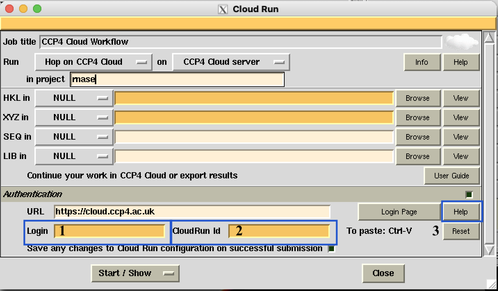

7. Cloud Run Facility in CCP4i Interface¶
CCP4 Cloud projects can be initiated and executed from the CCP4i interface using the CCP4 Cloud Workflows task:
{kind=link}
Alternatively, you can use the Cloud Run option available in the interfaces for Refmac, Molrep, Crank-2, MrBump, and Morda tasks:
{kind=link}
Running Modes
Two running modes are available:
- “This machine” mode - Launches a local installation of the CCP4 Cloud interface on your machine. - All tasks will be executed locally, and no data will be transferred elsewhere. - This mode is suitable for use without an internet connection or authorization on the CCP4 Cloud server.
- “CCP4 Cloud server” mode - Executes jobs remotely on CCP4 Cloud server machines.
{kind=link}
—
Available Cloud Run Tasks
The following tasks are available for Cloud Run:
{kind=link}
MR with Alphafold2Creates a standard project, imports data, and starts a workflow based on structure prediction with AlphaFold-2. .. note:: This task is only available on the CCP4 Cloud remote server unless a local AlphaFold setup is linked with CCP4 Cloud.AUTO EPCreates a standard project, imports data, and starts the Auto-EP workflow based on the Crank-2 pipeline.AUTO MRCreates a standard project, imports data, and starts the Auto-MR workflow, utilizing MrBump and Simbad pipelines.AUTO RefinementCreates a standard project, imports data, and starts the Auto-REL workflow, performing automatic structure refinement with optimization of Refmac parameters and water molecule fitting.DimpleCreates a standard project, imports data, and starts the Dimple workflow for fast ligand blob identification and fitting.hop-onCreates a hop-on project, imports data, and stops.
—
Authentication for Remote Jobs
To run jobs on the CCP4 Cloud server, you need your login (1) and CloudRun ID (2). These can be found on the My Account page. For more information, press the help (3) button.
{kind=link}
- Copy your CloudRun ID from your web browser.
- Paste it into CCP4i (use Control-V, even on macOS).
- Enter your login name.
To save authentication data in CCP4i configuration, keep “Save any changes to ccp4i configuration on successful submission” checked. Alternatively, you can edit the Cloud Run configuration in System Administration => Configure Cloud Run.
{kind=link}
Note
You can update these settings from either the Cloud Run task interface or System Administration => Configure Cloud Run.
Note
To start a new CCP4 Cloud session, check the box next to “and launch CCP4 Cloud interface in web browser.” Leave it unchecked to stay in an existing session.
—
Continuing Work
Once the job is completed in the CCP4 Cloud interface, you can either:
—
Useful Links